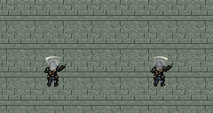
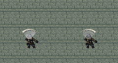
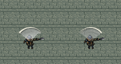
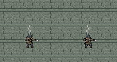
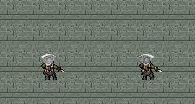
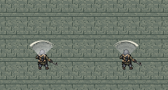
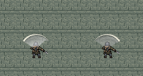

近战范围特效 · 第二版
骨白外缘沿挥砍方向由粗渐细，灰色内侧残影；军刺使用独立尖端刺击。前摇显示淡轮廓，出手后保持80ms、再淡出160ms。外缘按真实扇角和半径绘制，向内增加厚度。
进入靶场 · 原稿与提示词
左粗→右细
 melee_slash_lr · 生成原稿
melee_slash_lr · 生成原稿
右粗→左细
 melee_slash_rl · 生成原稿
melee_slash_rl · 生成原稿
向前尖端刺击
melee_thrust · 生成原稿
七把武器 · 实际绘制结果（左→右 / 右→左）
以下截图由真实游戏绘制函数生成，按整数倍展示。军刺左右两栏均为同一尖端形状。
旧式折叠刀 · 55° / 0.65格

前摇 0.12秒 · 装备图标
M-9 制式战斗刀 · 75° / 0.8格

前摇 0.2秒 · 装备图标
重型丛林砍刀 · 100° / 0.95格

前摇 0.35秒 · 装备图标
三棱军刺 · 25° / 1格

前摇 0.3秒 · 装备图标
应急救援刀 · 65° / 0.55格

前摇 0.1秒 · 装备图标
工业撬棍 · 85° / 0.85格

前摇 0.32秒 · 装备图标
廓尔喀弯刀 · 110° / 0.85格

前摇 0.38秒 · 装备图标